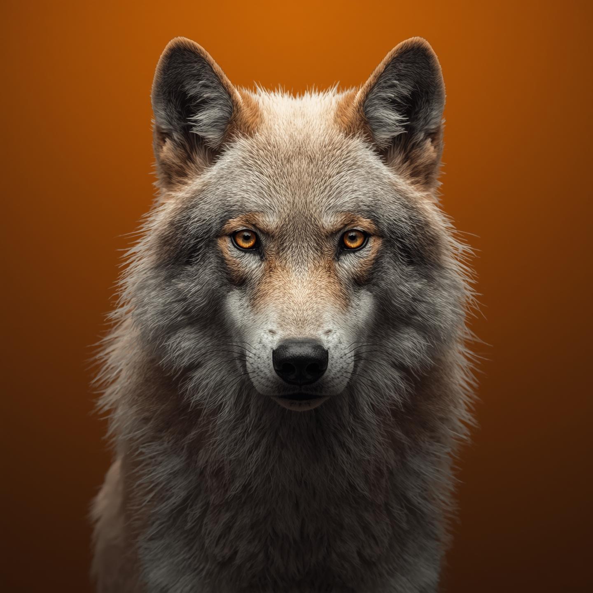

Este exemplo mostra diferentes formas de usar as tags <img> e <video>, incluindo o uso de <figure> e <figcaption> para agrupar mídias com legendas.
Descrição
As tags abordadas são:
<img>: Usada para inserir imagens na página.
<video>: Usada para inserir vídeos na página.
<figure>: Usada para agrupar mídias (imagens, vídeos, gráficos) com uma legenda.
<figcaption>: Usada para adicionar uma legenda ao conteúdo dentro de <figure>.
Exemplos Práticos
Exemplo de uso das tags <img>,<figure>, <figcaption>

Imagem de um Lobo Branco
Exemplo de uso das tags <video>,<figure>, <figcaption>
Exemplo de Vídeo
Incorporação de Vídeos do YouTube usando a tag <iframe>
Abaixo usamos como exemplo dois vídos do YouTube, não esqueça de sempre verificar os direitos autorias antes de publicar imagens ou vídeos que não são seus.